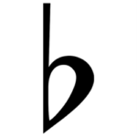

Run
Reset
mooi lied
Mooi liedje
hier komt een mooi liedje
Notenbalk

kruis
hele noot
halve noot
kwart noot
hele noot met kruis
halve noot met kruis
kwart noot met kruis
hele noot met mol
halve noot met mol
kwart noot met mol
hele rust
halve rust
kwart rust